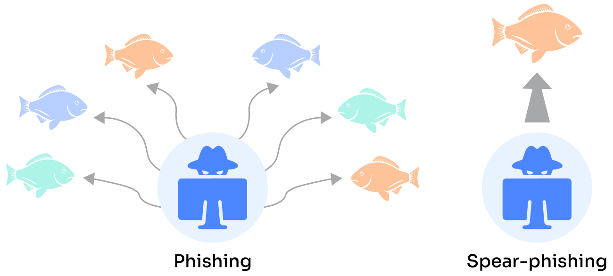
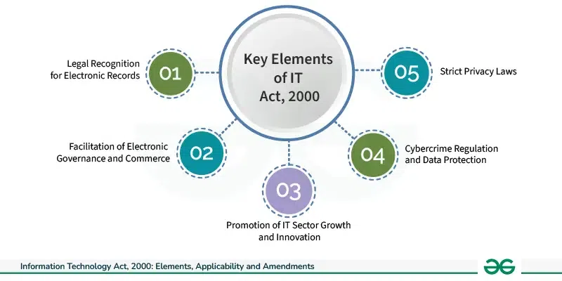

CSL
Explain different attacks on Mobile/Cell Phones.
- Mobile Phone Theft
- Physical theft: This is the most common type of attack, where a thief physically steals a phone.
- Remote theft: Using apps or services like "Find My Device" or "Locate My iPhone," a thief can remotely lock or wipe data from a stolen phone.
- Mobile Viruses
- Malware: Malicious software can infect a phone through downloads, text messages, or Bluetooth connections.
- Spyware: This type of malware secretly monitors a phone's activities, including calls, messages, and location data.
- Ransomware: This encrypts data on a phone and demands a ransom for decryption.
- Mishing
- Mishing is a combination of "message" and "phishing." Attackers send fraudulent text messages, often pretending to be from a trusted source, to trick victims into clicking on malicious links or providing personal information.
- Vishing
- Vishing is a combination of "voice" and "phishing." Attackers make phone calls, often using spoofed numbers, to trick victims into revealing sensitive information.
- Smishing
- Smishing is a combination of "SMS" and "phishing." Attackers send fraudulent SMS messages to trick victims into clicking on malicious links or providing personal information.
- Hacking Bluetooth
- Bluetooth hacking: Attackers can exploit vulnerabilities in Bluetooth connections to gain access to a phone's data or even control it remotely.
Who are cyber criminals?
Most cyber-attacks are spearheaded by individuals or small groups of hackers. However, sizeable, organized crime also exploits the internet.
Professional hackers continuously develop new methods for committing crimes and often form global criminal networks that treat cybercrime as a business. These groups share strategies and tools to execute coordinated attacks from various locations. With the rise of cyber-markets for buying and selling stolen data, tracking these criminals has become increasingly difficult. The internet facilitates anonymous collaboration, allowing attacks to be launched from anywhere. Hackers frequently use compromised computers and disguise their identities, complicating the identification of perpetrators and their methods. Additionally, differing crime laws across countries further complicate international cybercrime cases.
Cybercrime involves such activities as:
- Child pornography
- Credit card fraud
- Cyber stalking
- Defaming another online
- Software piracy
Cyber criminals are those who conducts such act. They can be categorised into three groups that reflect their motivation
- Cyber criminals - hungry for recognition
- hobby hackers
- IT professionals
- politically motivated hackers
- terrorist organisations
- Cyber criminals - not interested in recognition
- psychological perverts
- financially motivated hackers
- organized criminals
- Cyber criminals - the insiders
- disgruntled or formal employees seeking revenge
- competing companies using employees to gain economic advantage through damage or theft
Classifications of cybercrime:
- Cybercrime against individual
- Cybercrime against property
- Cybercrime against the organization
- Cybercrime against Society
Explain Pornographic Offenses, Cyberdefamation, Credit Card Fraud.
Pornographic Offenses
Section 67 of the said Act punishes publication or transmission of obscene content in electronic form.
- Section 67A
- Provides punishment for publishing or transmitting obscene digital content containing sexually explicit acts.
- This could be any adult content videos or MMS or short clips or images including 'selfies' (self-clicked images).
- Section 67B
- Punishes child pornography, child grooming or exploitation.
- This Section was added by IT (Amendment) Act, 2008.
- According to this Section, if any person publishes or transmits material depicting children in sexually explicit acts in electronic form or creates:
- images text
- collects
- seeks
- downloads
- advertises
- promotes
- distributes content that depicts children in obscene or in sexually explicit manner
- Such person is punishable with imprisonment for a term which may extend up to five years and imposed fine which may extend up to Rs.10.00 Lacs.
- The said Section also provides that if any person entices children into online relationship with one or more children for sexually explicit acts or in a manner that can offend a reasonable adult or facilitates abusing children online or records in electronic form own abuse or that of others relating to sexual explicit act with children is punishable on first conviction with imprisonment for a term which may extend up to five years and fine up to Rs.10.00 Lacs.
The Act also criminalizes online child pornography in the following circumstances:
- Publication or transmission of any material depicting children in explicit sexual act or conduct by using any computer resource and communication device.
- Where user uses computer or communication resource for seeking or collecting or creating digital images or texts or downloading or promoting etc. any material in any electronic form depicting children in an obscene or indecent or sexually explicit manner.
- Facilitating abusing children online.
- Recording in any electronic form owns abuse or that of others pertaining to sexually explicit activities with children.
In addition, the POCSO Act was enacted in year 2012 to provide legal protection against sexual assault, sexual harassment, and child pornography.
Cyberdefamation

Cyber defamation is an act of intentionally insulting, defaming, or offending another individual or a party through a virtual medium.
It can be both written and oral. Under our Indian law, the person who defames you can be sued along with the person sharing and reposting that content.
All those actions, sharing, liking, retweeting and or commenting may be taken as a republication of defamatory content.
The act of republishing from social media is so simple that users give little thought to the serious consequences which may result.
Most of them think that deleting a story or post afterwards would be enough but Internet keep records, and they could be held responsible for reposting serious negative content.
Libel is written defamation and slander is oral defamation.
Credit Card Fraud
Credit card fraud involves the unauthorized use of someone else's credit card information to make purchases or access funds. It’s a serious crime that can result in significant financial loss and damage to one's credit history. Here’s a breakdown of what it entails and an example:
Types of Credit Card Fraud:
- Stolen Card Information: When someone physically steals a credit card or obtains the card information through methods like phishing or hacking.
- Card Not Present (CNP) Fraud: Occurs when fraudsters use stolen credit card details to make online or phone purchases where the physical card is not required.
- Account Takeover: When a fraudster gains access to a person’s credit card account, often by stealing login credentials, and then makes unauthorized transactions.
- Application Fraud: When someone uses stolen or fake information to open a new credit card account.
Example of Credit Card Fraud:
Imagine you receive a notification from your bank about suspicious activity on your credit card. Upon reviewing, you discover that several high-value transactions have been made at a luxury retailer that you’ve never visited. After investigating, you learn that your credit card details were stolen and used by a fraudster to make these purchases online.
In this case, the fraudster likely obtained your credit card information through a data breach, phishing email, or by skimming your card at a point-of-sale terminal. They then used the stolen information to make purchases without your consent.
To prevent credit card fraud, it’s essential to regularly monitor your account for unauthorized transactions, use strong passwords, be cautious with sharing your card information, and report any suspicious activity to your bank immediately.
Explain Phishing and its types in detail.
Phishing is a type of cyber attack where an attacker tries to deceive individuals into providing sensitive information, such as passwords, credit card numbers, or personal details, by pretending to be a trustworthy entity. The attacker typically uses fraudulent emails, messages, or websites that mimic legitimate ones to trick the victim.
Types of Phishing:
- Email Phishing:
- Description: The most common form, where attackers send fraudulent emails that appear to come from a legitimate source, such as a bank, social media platform, or online service.
- Example: You receive an email that looks like it’s from your bank, asking you to click a link and enter your login credentials to verify your account. The link leads to a fake website designed to capture your information.

- Spear Phishing:
- Description: A more targeted form of phishing where attackers customize their messages to a specific individual or organization, often using information gathered from social media or other sources to make the attack more convincing.
- Example: An attacker sends an email to a company’s finance department, appearing to come from the CEO, requesting sensitive financial information or urging the recipient to perform a wire transfer.
- 
- Whaling:
- Description: A type of spear phishing that specifically targets high-profile individuals within an organization, such as executives or important decision-makers.
- Example: An email that appears to come from a trusted source, like a law firm or regulatory body, targets the CEO with a request for confidential business information or a financial transaction.
- Smishing:
- Description: Phishing attacks conducted via SMS (text messages). Attackers send messages that appear to be from a legitimate organization, urging the recipient to click on a link or provide personal information.
- Example: You receive a text message claiming to be from your bank, stating there’s an issue with your account and asking you to click a link to resolve it. The link leads to a fake website designed to steal your login details.

- Vishing (Voice Phishing):
- Description: This type of phishing occurs over the phone. Attackers impersonate legitimate entities, such as banks or government agencies, and use social engineering tactics to extract sensitive information.
- Example: You receive a phone call from someone claiming to be from your credit card company, saying there’s suspicious activity on your account. They ask you to verify your personal information to "secure" your account.

- Pharming:
- Description: A technique where attackers redirect users from legitimate websites to fake ones to steal their credentials or other sensitive information. This is typically achieved through DNS spoofing or malware.
- Example: You type in the URL for your bank’s website, but due to pharming, you are redirected to a fake site that looks identical to the real one. You enter your login details, which are then captured by the attackers.

Explain E-Mail Spoofing, Software piracy.
E-Mail Spoofing

A spoofed E-Mail is one that appears to originate from one source but has been sent from another source.
The goal of spoofing is to trick users into believing the email is from someone they know or can trust—in most cases, a colleague, vendor, or brand. Exploiting that trust, the attacker asks the recipient to divulge information or take some other action.
Example:
An attacker might create an email that looks like it comes from PayPal. The message tells the user that their account will be suspended if they don’t click a link, authenticate into the site, and change the account’s password. If the user is successfully tricked and types in credentials, the attacker now has credentials to authenticate into the targeted user’s PayPal account, potentially stealing money from the user.
More complex attacks target financial employees and use social engineering and online reconnaissance to trick a targeted user into sending millions to an attacker’s bank account.
To the user, a spoofed email message looks legitimate, and many attackers will take elements from the official website to make the message more believable.

Software piracy
An attack that involves the unlawful copying, distribution and use of software programs with the intention of commercial or personal use.
Trademark violations, copyright Infringements and patent violations are often associated with this type of cybercrime.
Software piracy means invalid and out of rule reproduction and distribution of software applications. Software piracy results in great harm to our economy in the form of social and economic losses.
These are some of the types of software piracy:
- INTERNET PIRACY: refers to illegal download of copies on the internet.
- END USER PIRACY: refers to copy software without a valid license.
- PRE-INSTALLED SOFTWARE PIRACY: refers to an invalid installation of computer software on multiple systems by a manufacturer.
- COUNTERFEITING: refers to the making and selling of duplicated CDs from original software at a lower price.

Explain the Trojan horse and its types in detail.

Trojan horse is a type of malware that conceals its true content to fool a user into thinking it's a harmless file. The "payload" carried by a Trojan is unknown to the user, but it can act as a delivery vehicle for a variety of threats. Types of Trojan viruses Some of the most common types of Trojan virus include:
- Backdoor Trojans - This type of Trojan allows hackers to remotely access and control a computer, often for the purpose of uploading, downloading, orexecuting files at will.
- Exploit Trojans - These Trojans inject a machine with code deliberately designed to take advantage of a weakness inherent to a specific piece of software.
- Rootkit Trojans - These Trojans are intended to prevent the discovery of malware already infecting a system so that it can affect maximum damage.
- Banker Trojans - This type of Trojan specifically targets personal information used for banking and other online transactions.
- SMS Trojan - These programs can cost you money by sending text messages from your mobile device to premium rate phone numbers.
- Spy Trojan - Trojan-Spy programs can spy on how you're using your computer – for example, by tracking the data you enter via your keyboard, taking screenshots, or getting a list of running applications.
- Distributed Denial of Service (DDoS) Trojans - These are programmed to execute DDoS attacks, where a network or machine is disabled by a flood of requests originating from many different sources.
- Downloader Trojans - These are files written to download additional malware, often including more Trojans, onto a device.
If you suspect your device may have been breached by a Trojan, you should look for many of the same significant signs of malicious software. These may include:
- Poor device performance - Is your computer or mobile device running slowly or crashing more frequently than normal?
- Strange device behaviour - Are programs running you didn’t initiate or are other unexplained processes being executed on your device?
- Pop-up and spam interruptions - Are you noticing an uptick in the number of interruptions from browser pop-ups or email spam?
If your device is exhibiting these symptoms, it’s possible a Trojan virus has managed to sneak its payload onto your computer.
There are a few best practices in addition to installing cybersecurity software to help keep yourself safe:
- Never download or install software from a source you don’t trust completely.
- Never open an attachment or run a program sent to you in an email from someone you don’t know.
- Keep all software on your computer up to date with the latest patches.
- Make sure a Trojan antivirus is installed and running on your computer
Explain Cyberstalking and harassment in detail.
Cyberstalking and cyber harassment are serious offenses that involve the use of technology to repeatedly harass, threaten, or stalk someone. These behaviors can cause significant emotional distress and impact a person's daily life.
Cyberstalking
Cyberstalking is a more severe form of harassment that involves a pattern of behavior aimed at causing fear, distress, or harm to a person. It can include:
- Repeated unwanted communication: Sending excessive emails, texts, or messages through social media.
- Threats: Making threats of violence or harm to the victim or their loved ones.
- Monitoring online activity: Tracking a person's online behavior, such as their social media posts or website visits.
- Sharing private information: Publishing private or embarrassing information about the victim online.
- Impersonating the victim: Creating fake profiles or accounts using the victim's identity.
Cyber Harassment
Cyber harassment is a broader term that encompasses any form of online harassment, including:
- Flaming: Sending abusive or insulting messages online.
- Denigration: Posting negative or false information about someone online.
- Masquerading: Pretending to be someone else to harass or intimidate a victim.
- Outing: Revealing someone's private information online without their consent.
- Cyberbullying: Bullying someone online, often through social media or online forums.
Impact of Cyberstalking and Harassment:
- Emotional distress: Victims may experience anxiety, fear, depression, and difficulty sleeping.
- Loss of privacy: The invasion of privacy can lead to feelings of violation and embarrassment.
- Social isolation: Victims may withdraw from social activities due to fear or shame.
- Impact on work or school: The harassment can interfere with a person's ability to concentrate and perform their duties.
- Physical harm: In some cases, cyberstalking can escalate to physical violence.
How criminals plan the attacks with examples and explain the types of cyber criminals.
Criminals plan the attacks
- 1. Reconnaissance
- Target Identification: Criminals identify potential targets based on factors like vulnerability, value of data, and ease of access.
- Information Gathering: They collect information about the target's systems, networks, and security measures through various techniques.
- Social Engineering: They gather information about individuals within the target organization to identify potential vulnerabilities or points of entry.
- Passive Attacks
- Data Collection: Criminals passively observe the target's network traffic, website activity, and social media presence to gather information.
- Vulnerability Assessment: They identify potential weaknesses in the target's systems and security measures.
- Active Attacks
- Scanning: Criminals actively probe the target's network to identify open ports, services, and vulnerabilities.
- Exploitation: They exploit identified vulnerabilities to gain unauthorized access to the target's systems.
- Scrutinizing and Scanning the Gathered Information
- Analysis: Criminals analyze the collected information to identify the most effective attack vectors and potential vulnerabilities.
- Planning: They develop a detailed plan for the attack, including the specific techniques to be used and the desired outcome.
- Attack
- Execution: Criminals execute the attack according to their plan, using various techniques like phishing, malware, social engineering, or denial-of-service attacks.
- Persistence: They may continue to monitor and adjust their attacks based on the target's response.
Types of cyber criminals
Cyber criminals are those who conducts such act. They can be categorised into three groups that reflect their motivation
- Cyber criminals - hungry for recognition
- hobby hackers
- IT professionals
- politically motivated hackers
- terrorist organisations
- Cyber criminals - not interested in recognition
- psychological perverts
- financially motivated hackers
- organized criminals
- Cyber criminals - the insiders
- disgruntled or formal employees seeking revenge
- competing companies using employees to gain economic advantage through damage or theft
Explain Social Engineering and its classification in detail.
Social engineering is the “technique to influence” and “persuasion to deceive” people to obtain the information or perform some action.
- Social engineers exploit the natural tendency of a person to trust social engineers‟ word, rather than exploiting computer security holes.
- It is generally agreed that people are the weak link in security and this principle makes social engineering possible.
- A social engineer usually uses telecommunication (i.e., telephone and/or cell phone) or Internet to get them to do something that is against the security practices and/or policies of the organization.
- Social engineering involves gaining sensitive information or unauthorized access privileges by building inappropriate trust relationships with insiders.
- It is an art of exploiting the trust of people, which is not doubted while speaking in a normal manner.
- The goal of a social engineer is to fool someone into providing valuable information or access to that information.
- Social engineer studies the human behaviour so that people will help because of the desire to be helpful, the attitude to trust people, and the fear of getting into trouble.
- The sign of truly successful social engineers is that they receive information without any suspicion.
Example: Calling a user and pretending to be someone from the service desk working on a network issue; the attacker then proceeds to ask questions about what the user is working on, what file shares he/she uses, what his/her password is, and so on…
Classification of Social Engineering
- Human-Based Social Engineering
- Computer-Based Social Engineering
Human-Based Social Engineering
Human-based social engineering refers to person-to-person interaction to get the required/ desired information.
An example is calling the help desk and trying to find out a password.
- Impersonating an employee or valid user:
- Social engineers “take advantage” of the fact that most people are basically helpful, so it seems harmless to tell someone who appears to be lost where the computer room is located, or to let someone into the building who “forgot” his/her badge, etc., or pretending to be an employee or valid user on the system.
- Posing as an important user:
- The attacker pretends to be an important user – for example, a Chief Executive Officer (CEO) or high-level manager who needs immediate assistance to gain access to a system.
- The attacker uses intimidation so that a lower-level employee such as a help-desk worker will help him/her in gaining access to the system. Most of the low-level employees will not ask any question to someone who appears to be in a position of authority.
- Using a third person:
- An attacker pretends to have permission from an authorized source to use a system. This trick is useful when the supposed authorized personnel is on vacation or cannot be contacted for verification.
- Calling technical support:
- Calling the technical support for assistance is a classic social engineering example.
- Help-desk and technical support personnel are trained to help users, which makes them good prey for social engineering attacks.
- Shoulder surfing:
- It is a technique of gathering information such as usernames and passwords by watching over a person‟s shoulder while he/she logs into the system, thereby helping an attacker to gain access to the system.
- Dumpster diving:
- It involves looking in the trash for information written on pieces of paper or computer printouts.
- This is a typical North American term; it is used to describe the practice of searching through commercial or residential trash to find useful free items that have been discarded.
- It is also called dumpstering, binning, trashing, garbing or garbage gleaning.
- “Scavenging” is another term to describe these habits.
Computer-Based Social Engineering
Computer-based social engineering refers to an attempt made to get the required/desired information by using computer software/Internet.
Example: sending a fake E-Mail to the user and asking him/her to re-enter a password in a webpage to confirm it.
- Fake E-Mails:
- The attacker sends fake E-Mails to users in such that the user finds it as areal e-mail. This activity is also called “Phishing”. It is an attempt to attract the Internet users (netizens) to reveal their personal information, such as usernames, passwords and credit card details by impersonating as a trustworthy and legitimate organization or an individual.
- Banks, financial institutes and payment gateways are the common targets.
- Phishing is typically carried out through E-Mails or instant messaging and often directs users to enter details at a website, usually designed by the attacker with abiding the look and feel of the original website. Thus, Phishing is also an example of social engineering techniques used to fool netizens.
- E-Mail attachments:
- E-Mail attachments are used to send malicious code to a victims system, which will automatically (e.g. keylogger utility to capture passwords) get executed.
- Viruses, Trojans, and worms can be included cleverly into the attachments to entice a victim to open the attachment.
- Pop-up windows:
- Pop-up windows are also used, in a similar manner to E-Mail attachments. Pop-up windows with specia
Explain about Cybercrime and Indian ITA 2000?

The Information Technology Act, 2000 (also known as ITA-2000, or the IT Act) is an Act of the Indian Parliament (No 21 of 2000) notified on 17 October 2000. It is the primary law in India dealing with cybercrime and electronic commerce. Secondary or subordinate legislation to the IT Act includes the Intermediary Guidelines Rules 2011 and the Information Technology (Intermediary Guidelines and Digital Media Ethics Code) Rules, 2021.
The original Act contained 94 sections, divided into 13 chapters and 4 schedules. The laws apply to the whole of India. If a crime involves a computer or network located in India, persons of other nationalities can also be indicted under the law, The Act provides a legal framework for electronic governance by giving recognition to electronic records and digital signatures. It also defines cybercrimes and prescribes penalties for them.
The Act directed the formation of a Controller of Certifying Authorities to regulate the issuance of digital signatures. It also established a Cyber Appellate Tribunal to resolve disputes arising from this new law. The Act also amended various sections of the Indian Penal Code, 1860, the Indian Evidence Act, 1872, the Banker's Book Evidence Act, 1891, and the Reserve Bank of India Act, 1934 to make them compliant with new technologies.
A major amendment was made in 2008. It introduced Section 66A which penalized sending "offensive messages". It also introduced Section 69, which gave authorities the power of "interception or monitoring or decryption of any information through any computer resource". Additionally, it introduced provisions addressing - pornography, child porn, cyber terrorism and voyeurism.

Explain Classification of cybercrime in detail.
Crime is defined as “an act or the commission of an act that is forbidden, or the omission of a duty that is commanded by a public law and that makes the offender liable to punishment by that law”.
Cybercrimes are classified as follows:
- 1. Cybercrime Against Individuals
- Electronic Mail (E-Mail) Spoofing and other online frauds: This includes impersonating someone to trick others into revealing sensitive information.
- Phishing, Spear Phishing, Vishing, Smishing, Whaling: These are various techniques used to trick individuals into clicking on malicious links or providing personal information.
- Spamming: Sending unsolicited bulk emails, often for advertising or fraudulent purposes.
- Cyberdefamation: Publishing false and harmful information about someone online.
- Cyberstalking and Harassment: Repeated and unwanted harassment or threats online.
- Computer Sabotage: Intentionally damaging or disrupting computer systems.
- Pornographic Offenses: Producing, distributing, or possessing child sexual abuse material or other illegal pornographic content.
- Password Sniffing: Capturing passwords transmitted over a network.
- 2. Cybercrime Against Property
- Credit card frauds: Using stolen credit card information for unauthorized purchases.
- Intellectual property (IP) crimes: Unauthorized copying, distribution, or use of copyrighted material.
- Internet time theft: Using someone else's internet connection without permission.
- 3. Cybercrime Against the Organization
- Unauthorized accessing of computer: Gaining unauthorized access to a computer system.
- Password sniffing: Capturing passwords transmitted over a network.
- Denial-of-service attacks: Overwhelming a network or server with traffic to make it inaccessible.
- Virus attack: Introducing malicious software into a computer system.
- E-Mail bombing/mail bombs: Sending excessive emails to a target to overwhelm their system.
- Salami attack/Salami technique: Stealing small amounts of money over time.
- Logic bomb: A hidden code in a program that is triggered by a specific event.
- Trojan Horse: Malicious software disguised as legitimate software.
- Data diddling: Altering data before, during, or after processing.
- Crimes emanating from Usenet newsgroup: Illegal activities conducted through Usenet newsgroups.
- Industrial spying/industrial espionage: Stealing confidential information from a company for competitive advantage.
- Computer network intrusions: Gaining unauthorized access to a computer network.
- Software piracy: Unauthorized copying or distribution of software.
- 4. Cybercrime Against Society
- Forgery: Creating false documents or signatures.
- Cyberterrorism: Using cyberattacks to achieve political or ideological goals.
- Web Jacking: Taking control of a website without authorization.
Difference between virus and worms.
| Feature | Virus | Worm |
|---|---|---|
| Definition | File-attached. | Network-based. |
| Propagation | Needs a host. | Spreads independently. |
| Impact | File damage, system crashes. | Network congestion, disruption. |
| Origin | Targeted attacks. | Malicious purposes. |
| Removal | Antivirus. | Difficult due to rapid spread. |
| Example | File infectors, boot sector viruses, macro viruses. | Internet worms (e.g., Code Red, Nimda), email worms (e.g., Love Letter). |
| Common Symptoms | Slow computer, crashes, corrupted files. | Network congestion, slow internet, system crashes. |
| Preventive Measures | Antivirus, avoid untrusted sources, keep software updated. | Firewalls, cautious of email attachments, avoid suspicious links. |
| Complexity | Varies. | More complex. |
| Persistence | Can persist after host removal. | Can continue to spread. |
| Stealth | Can be difficult to detect. | Often more noticeable. |
| Target | Specific systems or data. | Network infrastructure. |
| Payload | Data destruction, system disruption, or other malicious actions. | Network congestion or denial of service. |
| Infection Method | Infected files, email attachments, external storage devices. | Network connections, exploiting vulnerabilities in network protocols. |
| Spread | Limited to infected system or local network. | Can spread rapidly across networks, potentially reaching global scale. |
| Damage | Significant damage to individual systems and data. | Primarily causes network disruption and service outages. |
| Mitigation | Antivirus, system patching, user education. | Network security measures, vulnerability management, rapid response. |
| Discovery | Often discovered by users or system administrators. | Often detected by network monitoring tools or security researchers. |
| Evolution | Continuously evolving to evade detection and exploit new vulnerabilities. | Evolve rapidly to adapt to changing network environments and security measures. |
| Impact on Organizations | Financial losses, data breaches, reputational damage. | Business disruption, loss of productivity, financial losses. |
Short notes on Active attack and Passive attack.

Active Attacks
Active attacks involve the attacker directly modifying or disrupting the target system or network. Some key characteristics of active attacks:
- The attacker attempts to change or modify the content of messages
- They are dangerous to both integrity and availability of data
- The victim is informed about the attack
- System resources can be changed or damaged
- Examples include masquerade, message modification, replay, and denial of service attacks
Passive Attacks
In passive attacks, the attacker simply observes and gathers information without altering anything. Key points about passive attacks:
- The attacker monitors and copies message contents without modifying them
- They are a threat to confidentiality but not integrity or availability
- The victim is not informed about the attack
- System resources remain unchanged
- Examples include eavesdropping and traffic analysis